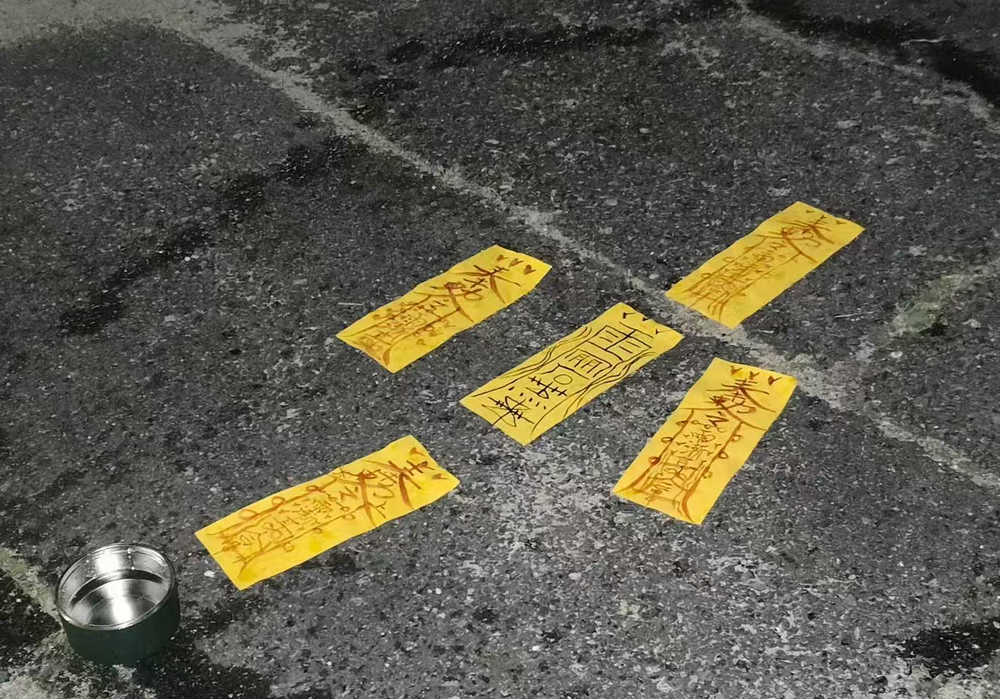

💬 历史聊天切片 (2017/8/17)
用户 a：
现在手机也能用这个聊天室了，好方便呀，输入自己的账号和密码就能用了！
用户 c：
好久没看见@用户b 上线了，怎么回事呀，我们不是每天都说话吗
用户 d：
应该是最近忙吧@用户c
用户 e：
我现在在外面旅游，这边好有意思，还有我家没见过的习俗，两天前经过一个广场，看到有一群人在围着一口大锅唱歌跳舞，不过这舞有点怪怪的，我在现场捡到了一张黄纸
用户 c：
@用户e 哇，好吓人，这个是封建迷信吧
用户 a：
现在各种各样的聊天软件越来越多了，@用户b 应该是玩别的软件去了吧
用户 c：
希望她不要忘了我们呀
📸 用户e的旅行动态图片传送

⚠ 用户e在广场上捡到的神秘黄纸上传自：移动端掌上设备 | 地点：未明广场